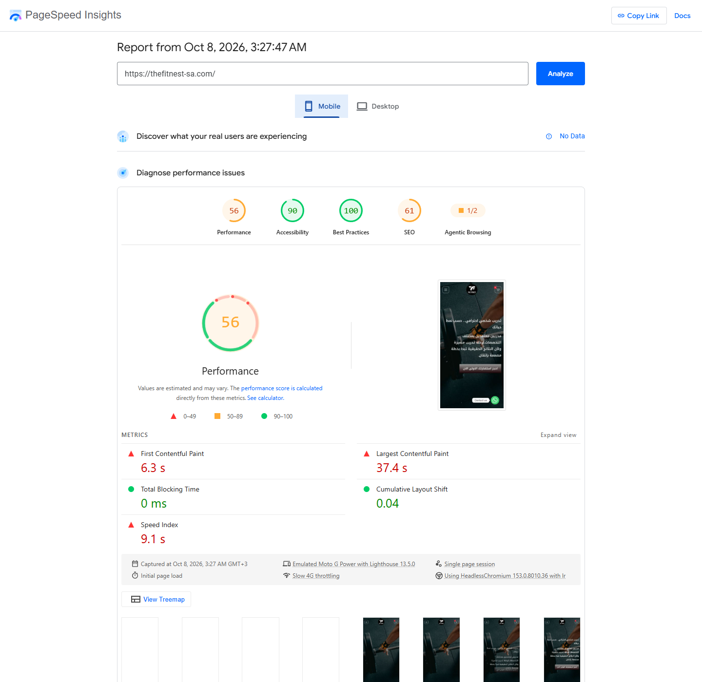
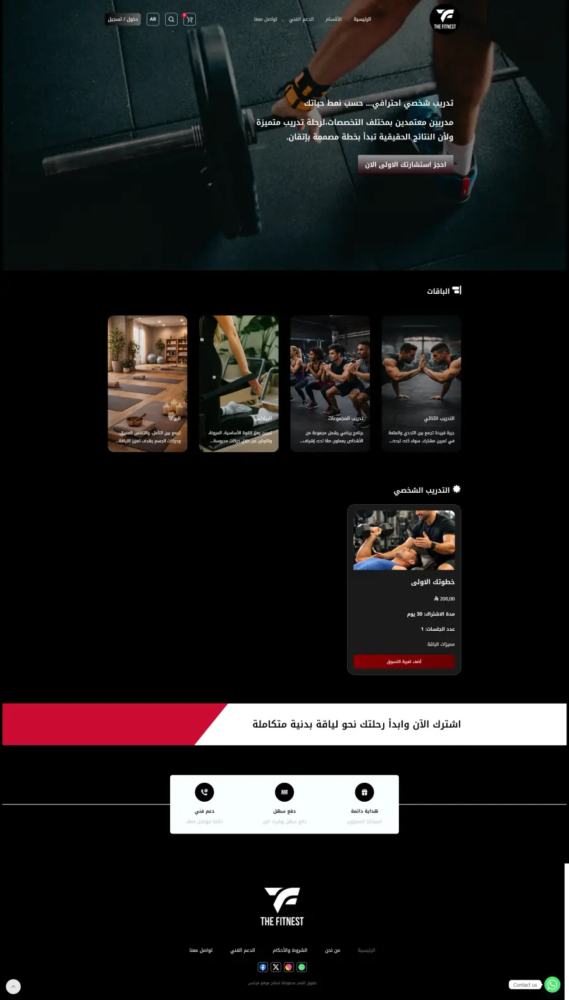
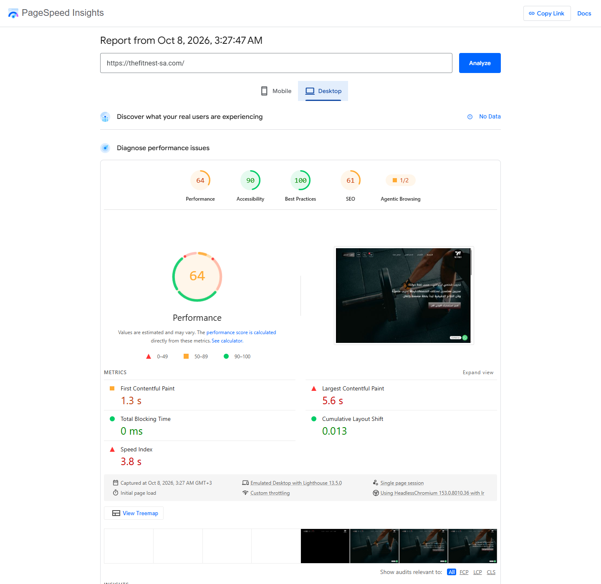

الموبايل 56/100

التقرير الأصليمتجر ووكومرس للتغذية الرياضية والمكملات وإكسسوارات اللياقة.

متجر ووكومرس للتغذية الرياضية والمكملات وإكسسوارات اللياقة.
WordPress · Elementor · WooCommerce
يعرض الرابط ومعاينة المشروع العمل المسلّم. لا تتوفر تفاصيل موثّقة عن مدة التنفيذ لهذا المشروع السابق؛ نتائج الأداء المقاسة معروضة أدناه.
قياس PageSpeed معملي بتاريخ ٨ أكتوبر ٢٠٢٦ للرابط الموضّح في التقرير. قد تشمل النسخة تغييرات لاحقة من العميل. النتائج ليست ضمانًا لسرعة جميع الصفحات أو مقارنة تحسين قبل وبعد.

التقرير الأصلي
التقرير الأصليعندك تصميم أو فكرة مشروع أو موقع يحتاج تطوير؟ نتكلم.